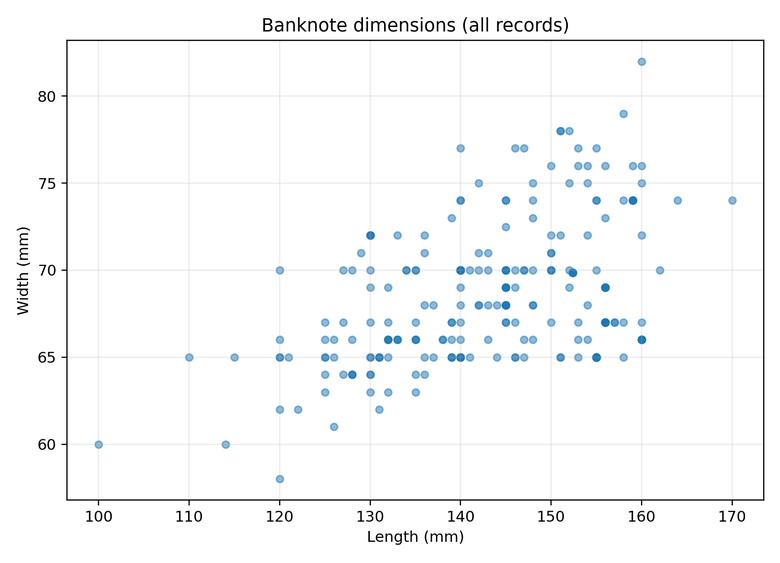
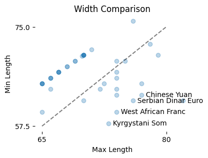
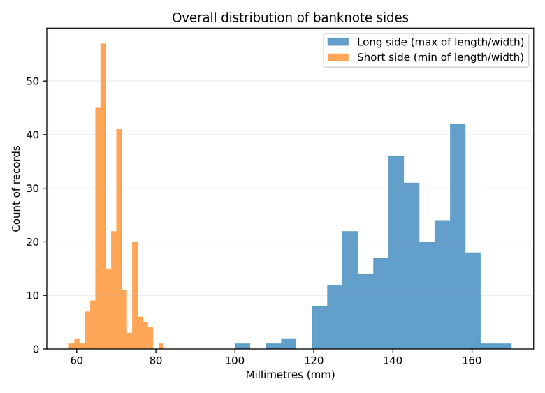
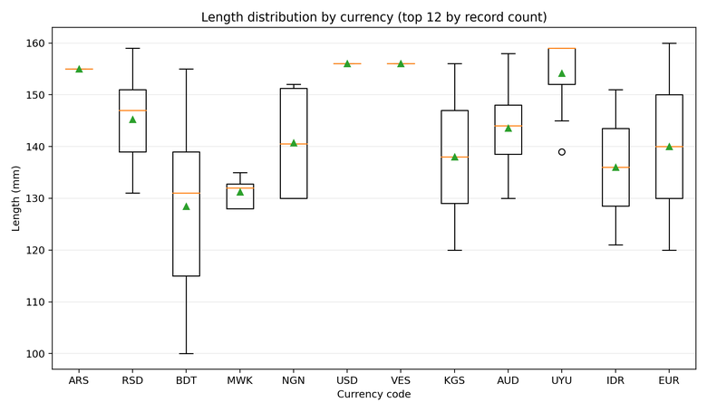
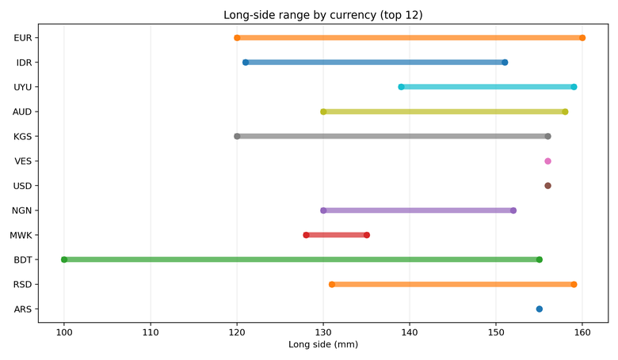

Project context
A leather goods brand received customer complaints that some international banknotes bend, stick out, or feel tight when inserted into wallet pockets. The design team wanted a single pocket standard that fits most notes without making the wallet bulky.
This analysis uses a banknote dimension dataset (length and width in millimetres) to answer two practical questions: what does “typical” look like, and what are the edge cases that drive real customer friction?
What this analysis is optimised for
- Fast scanning of overall size spread and clustering
- Clear view of variation by currency and denomination
- Evidence based sizing recommendation with tolerances
- Portfolio ready narrative with clean visuals
Overview
The story follows the same logic a stakeholder would use in a real design decision: start with the full spread, quantify typical sizes, examine variation by currency, then design for edge cases with a practical tolerance.
1) Explore the overall spread
The first view plots every banknote by length and width. Most notes cluster around the middle, but the outliers are the real risk because they drive bending and protrusion complaints. This chart makes that immediately visible.


Interpretation
Designing around the average is not enough. The biggest notes create the user pain, so the design needs a threshold approach: cover most notes and explicitly plan for edge cases.
2) What does “typical” look like?
To quantify what is typical, we separate each note into a long side and a short side. The distribution view shows where most notes sit and how far the tails extend. This supports a common product decision pattern: aim for a high percentile (for example 95th) rather than building only for rare extremes.


Targeted Takeaway
Use percentile driven sizing to reduce bulk while still covering almost all real world notes. This is more defensible than picking a single “standard” note as the reference.
3) Variation by currency and denomination
Even within one currency, denominations can vary in size. The box plot below compares length distributions for currencies with the most records in the dataset. Wider boxes and longer whiskers signal higher variation, meaning a wallet designed around one denomination can still fail for others.


What to do with this insight
- Validate the design against currencies with the largest spread
- Document which notes are “edge” sizes and why
- Use the range of sizes to guide tolerance and usability clearance
4) Designing for the edge cases
Wallet failures usually come from the largest notes. The range chart below shows how the long side varies across currencies in the top 12 group. This view supports the final design decision: size the pocket for the maximums, then add a practical clearance for stitching, lining, and a small stack of notes.


Sizing logic
Start from the dataset maximum note size, then add clearance so the pocket works in real use. Tight designs can look good in a spec sheet but fail in day to day handling.
Why this works
- Fits the largest notes plus clearance for stitching and lining
- Reduces bending, protrusion, and insertion friction
- Stays close enough to the main cluster to avoid unnecessary bulk